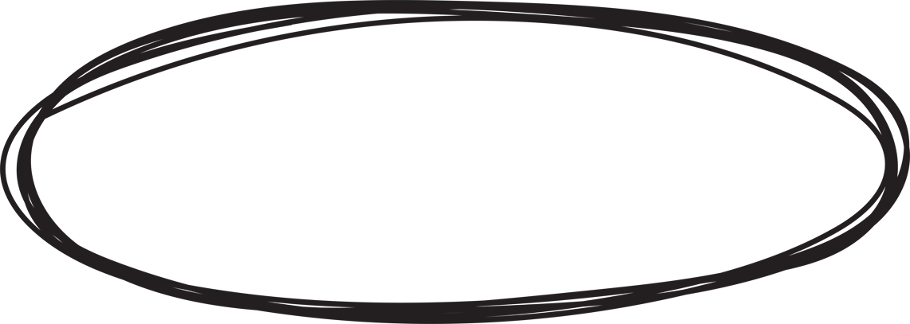
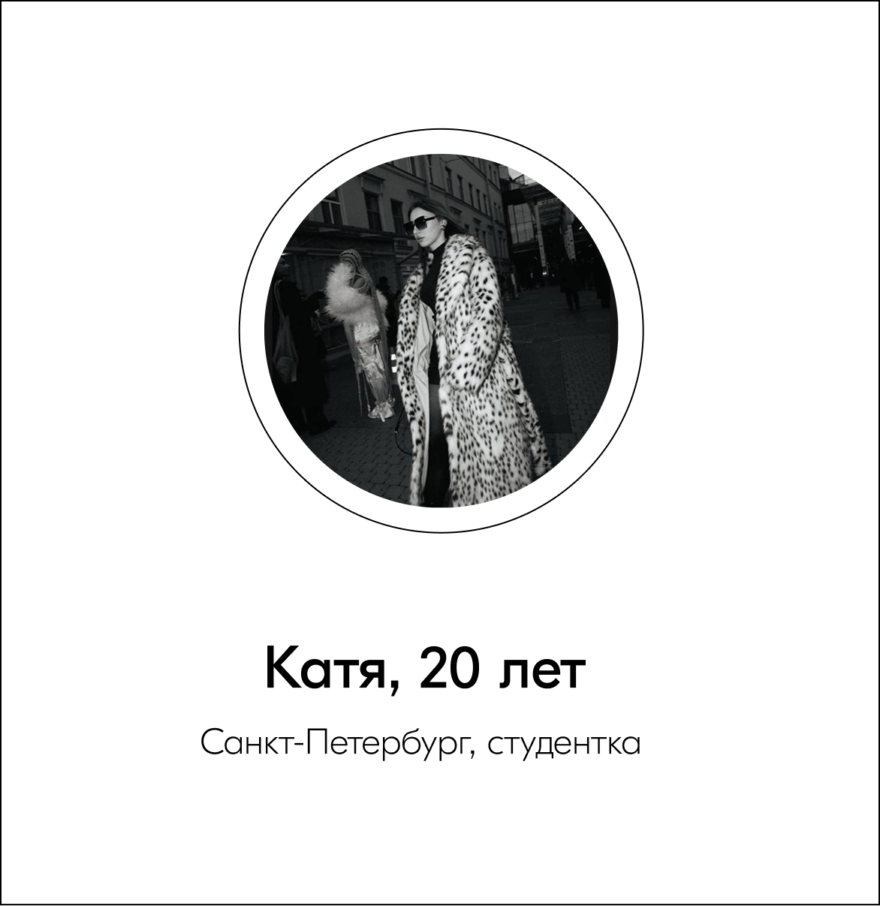
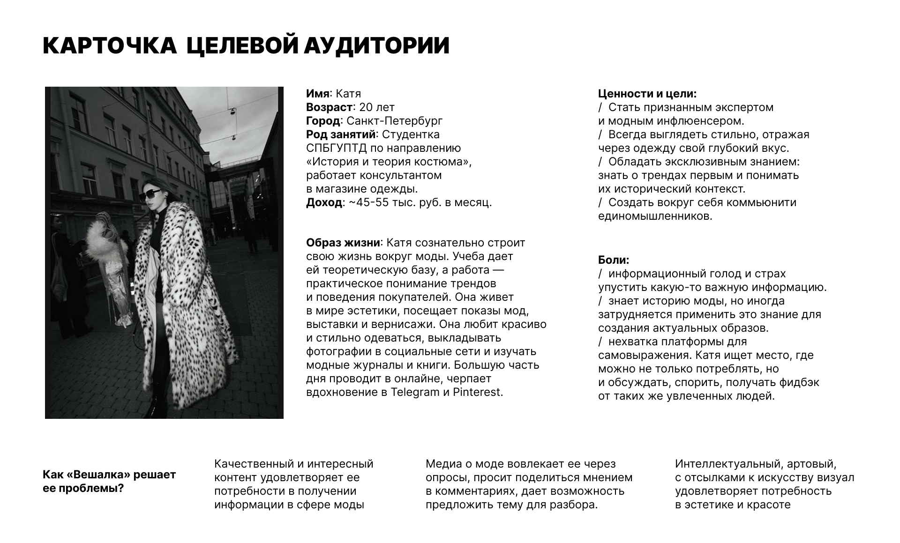
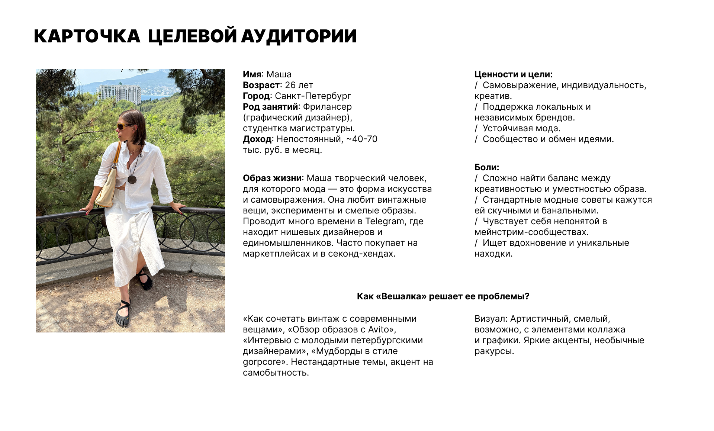

О проекте
«Вешалка» – digital-медиа о моде и стиле жизни. Здесь разбираются тренды, объясняется контекст и показывается, как всё это может работать в обычной жизни.
Проект объединяет разные форматы: аналитические тексты, практические гайды, визуальные подборки и наблюдения за индустрией.
Миссия

Сделать моду более доступной и понятной.«Вешалка» помогает разобраться в трендах простым языком. Важно не просто знать, что происходит в индустрии, а понимать, как это соотносится с личным стилем и повседневной жизнью.
Метафора бренда
В основе – образ вешалки как опоры и структуры.
Она удерживает вещи и помогает навести порядок.
Ту же роль выполняет и медиа: собирает разрозненные знания о моде и делает их более понятными.
Визуальная метафора
Вышивка. Она связана с вниманием к деталям и постепенным процессом. Стиль складывается не сразу, а шаг за шагом, как стежки в ткани.
В визуальном языке появляются строчки, неровности, ощущение ручной работы. Это добавляет тепла и делает образ менее стерильным и более живым.
Целевая аудитория

Проект ориентирован на девушек, живущих в крупных городах и работающих в разных сферах — от креативных индустрий до образования и IT. Они следят за модой, но не хотят растворяться в трендах.
Им важно выглядеть современно, при этом оставаться собой. Они ценят эстетику, но живут в реальном ритме, где есть работа, встречи и повседневные задачи.


Стиль общения
Коммуникация строится как разговор с опытной старшей подругой.
Тон спокойный и уверенный, без давления. Тексты остаются понятными, но не упрощаются до банальностей. Есть уважение к читателю и его выбору.
Используются объяснение и контекст вместо категоричных утверждений. Допустима лёгкая ирония, но без сарказма и резкости.
Главное – поддержать и помочь разобраться, а не навязать готовое решение.
Ключевое сообщение
а личный стиль
остаётся